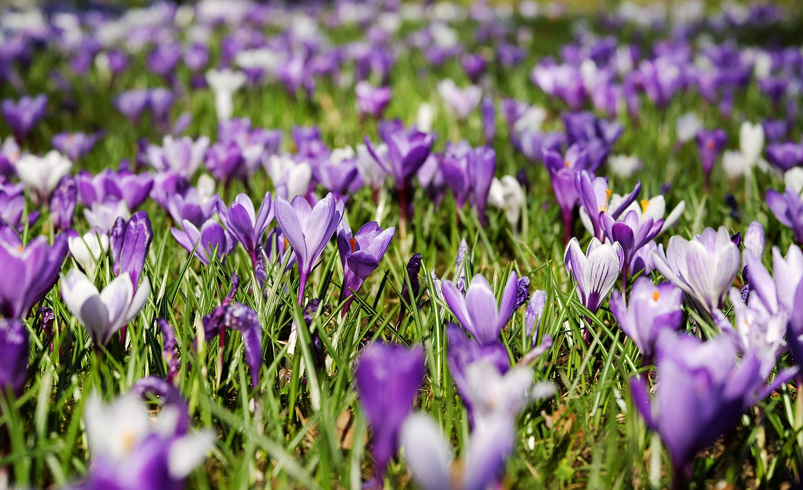
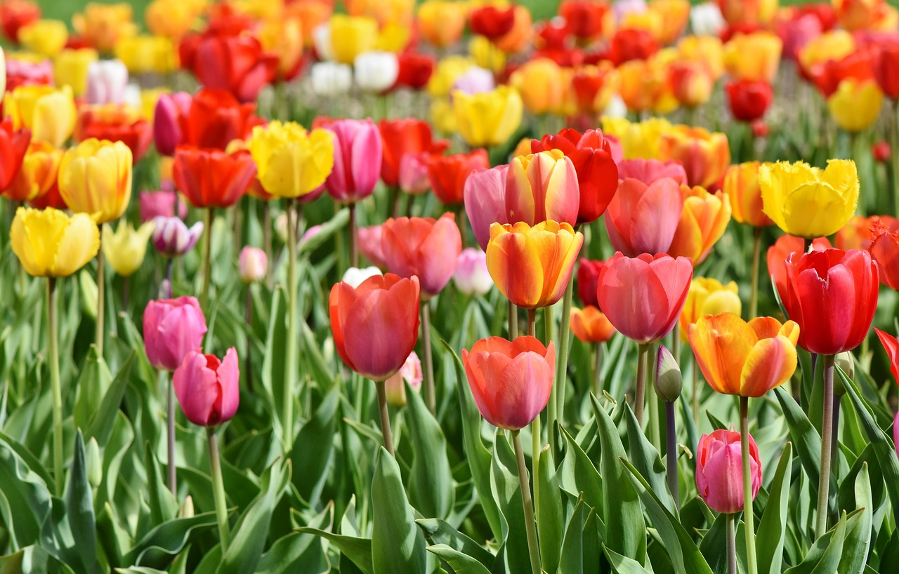
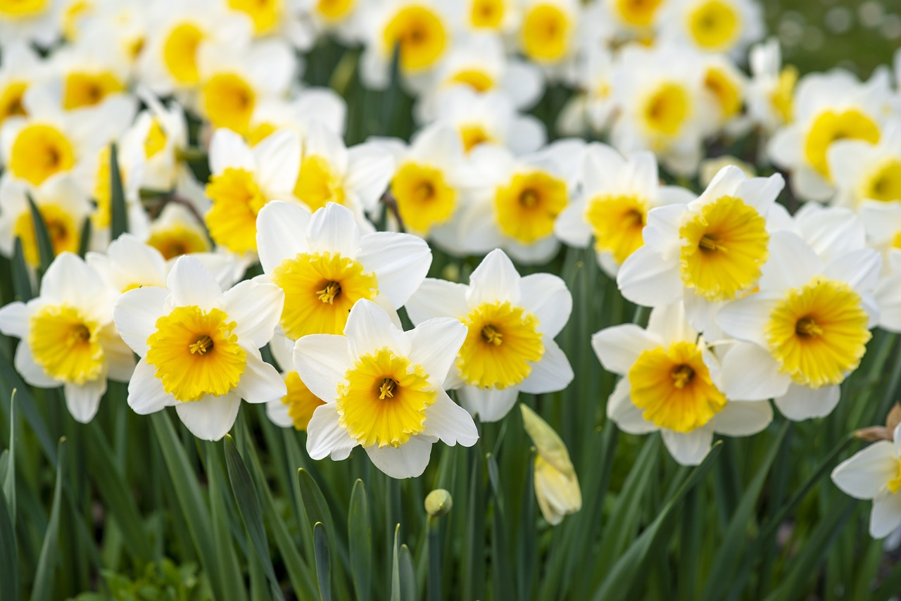

Photos of My Favorite Spring Flowers
Below are a three of my favorite flowers to grow in the spring because they're easy to manage and they come back year after year.
Crocus
Tulip
Daffodil

Interesting Facts About Spring Perennials
Learn More about Spring Flowers
- Since they live a long time, they do not need to produce many seeds to survive. In fact, once they are planted and well established, they will need minimal upkeep with watering and fertilizing.
- They often have a rest period at some point in their life cycle where the plant will remain dormat.
- These plants include a wide variety of flowers, fruits, herbs, and vegetables.